2024 Projects

-
Bark no More is a mixed reality (MR) tower defense game that reimagines your everyday surroundings as an interactive battlefield. By leveraging spatial mapping and depth sensing, the game blends virtual elements with the physical world. The core gameplay centers on intuitive, embodied interaction.
Physical motions replace traditional controller-based inputs, creating a seamless bridge between the player’s body and the game world.
 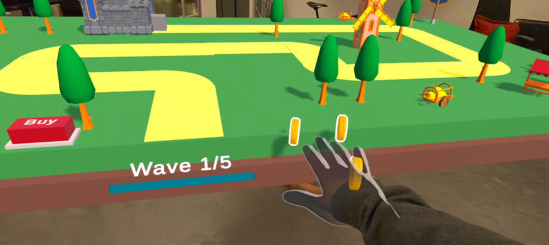
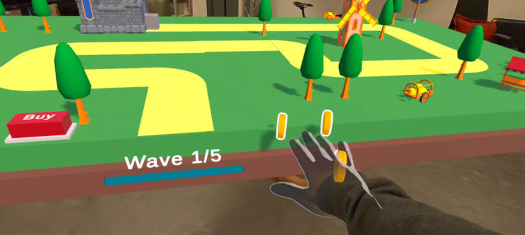
 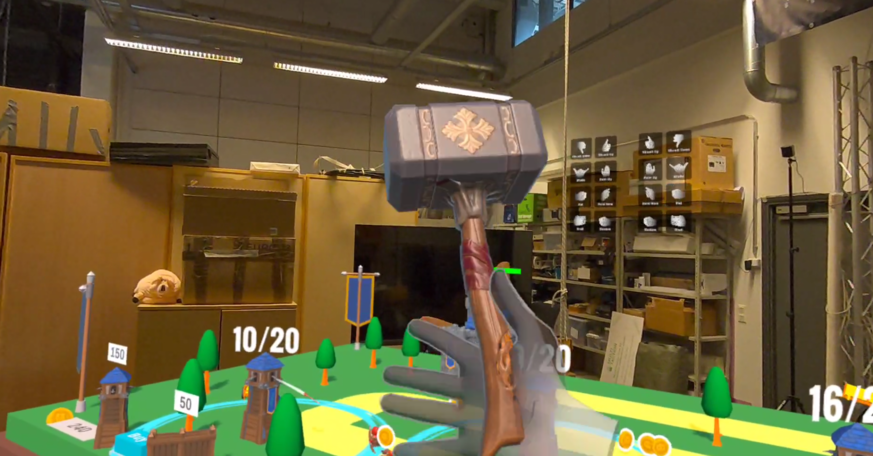
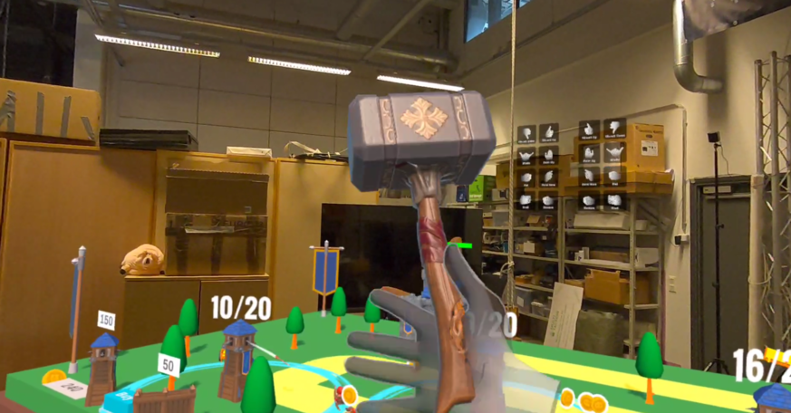
Genre: Tower Defense
Role: Programmer, Game Designer
Contributions: Gameplay, Game Design, Hand Tracking, Gesture Recognition
Embodied Interaction
MR
2 People
Itch.io Gameplay

-
Welcome to Monster Cleaning Inc., located in the heart of an RPG world! After nasty battles, these monsters need a good scrub. You need to use the right-sized sponge to clean it. Your cleaning skills will be judged by the monsters themselves, and their ratings will determine your success.
 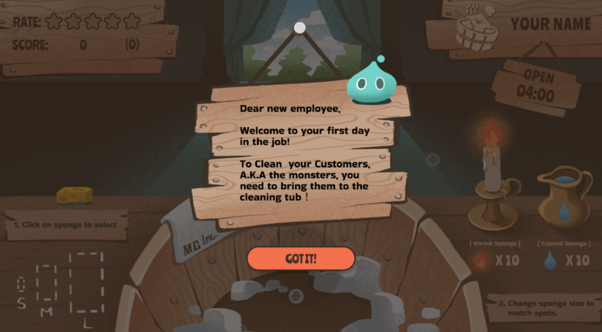
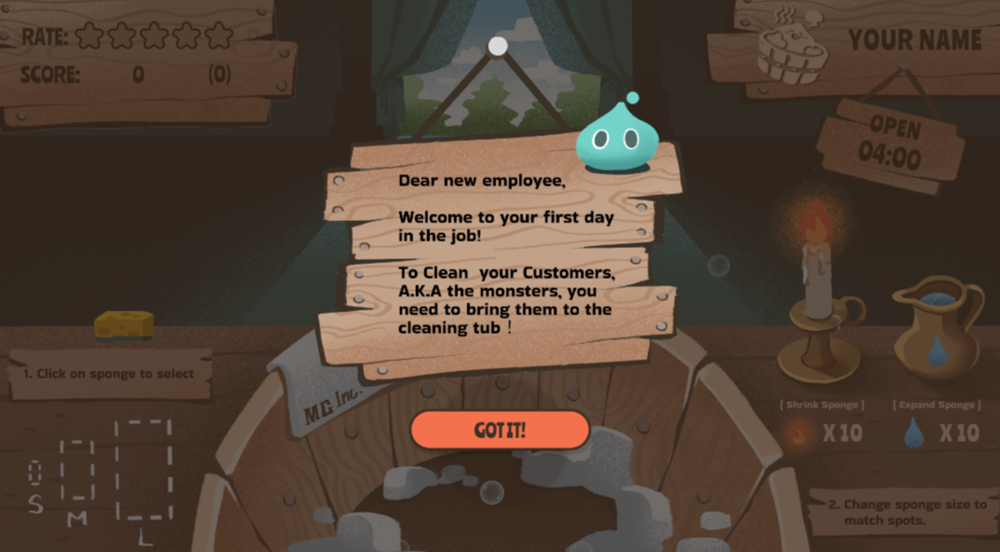


Genre: Survival, Clicker
Role: Programmer, Game Designer
Contributions: Gameplay, UI Programming
Rank: Style #54, Overall #358
GMTK Game Jam 2024
Web
5 People
Itch.io Trailer Gameplay

-
Unreality is a VR experience exploring the boundary between real and virtual spaces, evoking distinct emotions through interactive environments.
The project blends architecture and game design to challenge perceptions of reality.
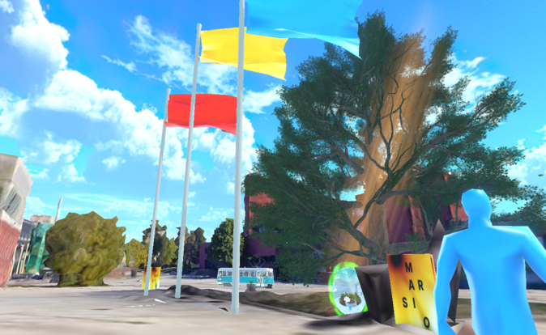

 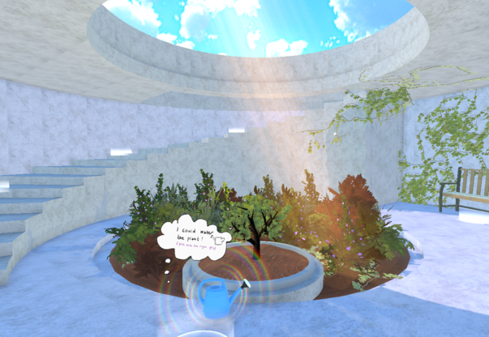
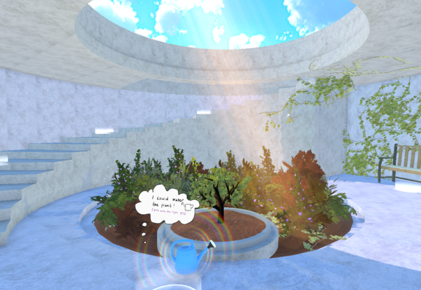
Genre: Walking Simulator, Adventure
Role: Programmer, Game Designer
Contributions: Gameplay, UI Programming, Lighting, Post-Processing, Game Design, Production Management
Designing Virtual Worlds
VR
4 People
Itch.io Trailer

-
Thoughts Out! is set in a dreamlike world where your everyday office troubles morph into an annoying dragon. This dragon can alter the surrounding environment, making your adventure either easier or more challenging. How can you drive it out of your daydream and reclaim your peace of mind?
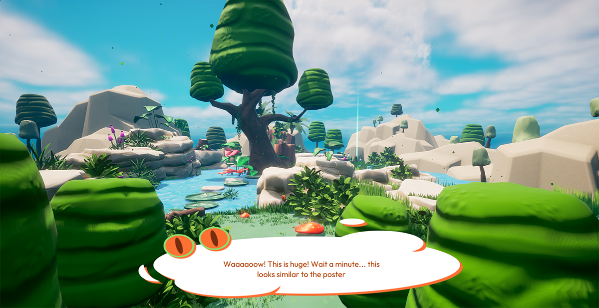


Genre: Puzzle, Platformer
Role: Programmer, Level Designer
Contributions: Gameplay, UI Programming, Dialogue System, Game Design
Made with Unreal Engine 5.3
Game Project 2 at Aalto
PC
9 People
Itch.io Trailer

 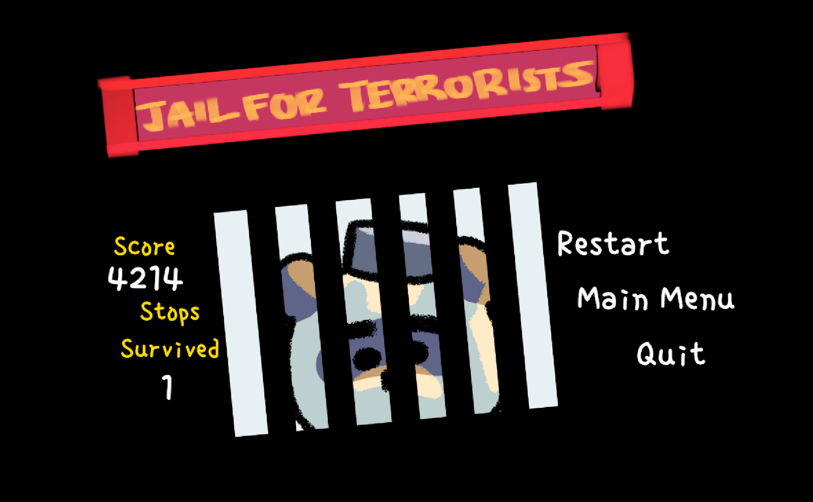
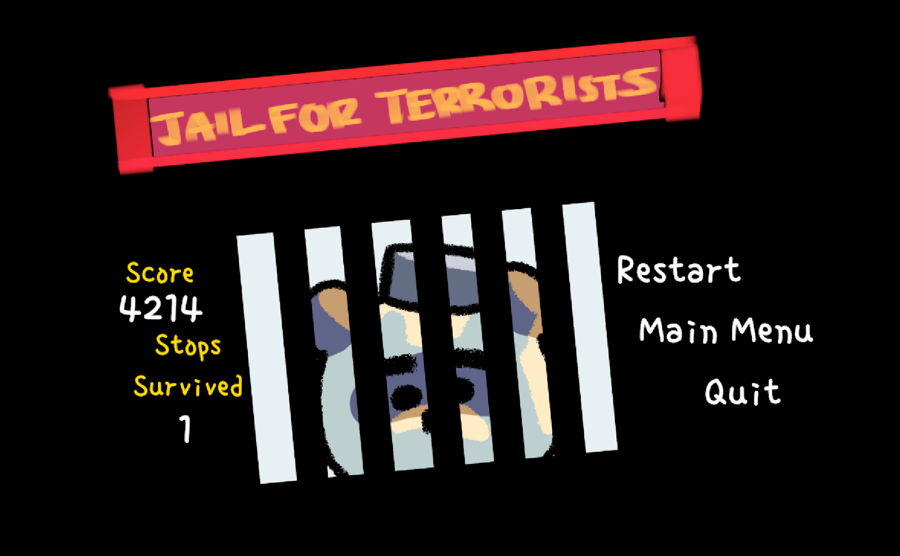

-
Zombies have stolen the brains of extraordinary scientists in pursuit to dominate the world. Retrieve their brains and save humanity!
My 1st game made in unity that also won the 1st place in IUT ICT Fest 2016! Making a 2D platformer for the first time and winning a Competition as a cherry on top has kept me hooked into making games ever since!
Genre: Action, Platformer
First Unity Project
PC
Solo
2016
Youtube
-
Squat Games is a gestural interaction based exergame prototype I developed using Unity and Kinect.
Player can embody a pogostick by controlling it with their gestures. Raising hands in specific direction changes the direction of the pogostick and squatting moves it forward.
Squat games aims to promote physical exercise by motivating players to move MORE!
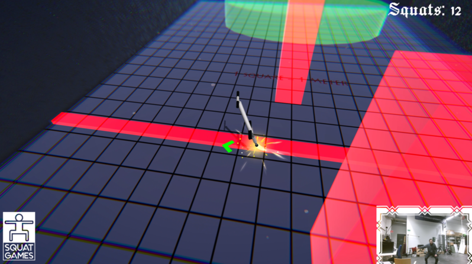 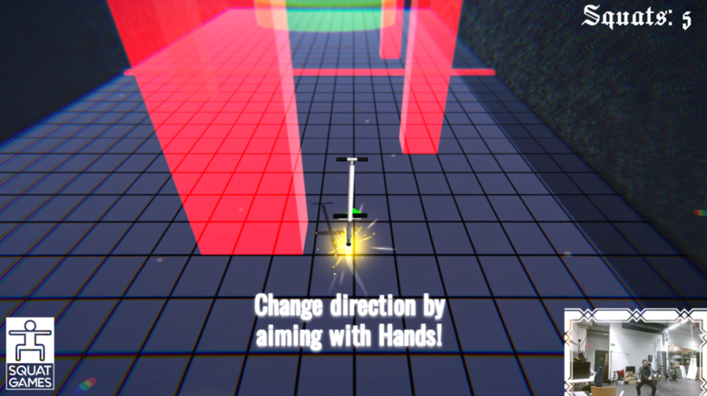
Embodied Interaction
Kinect
Solo
2025
Itch.io Youtube
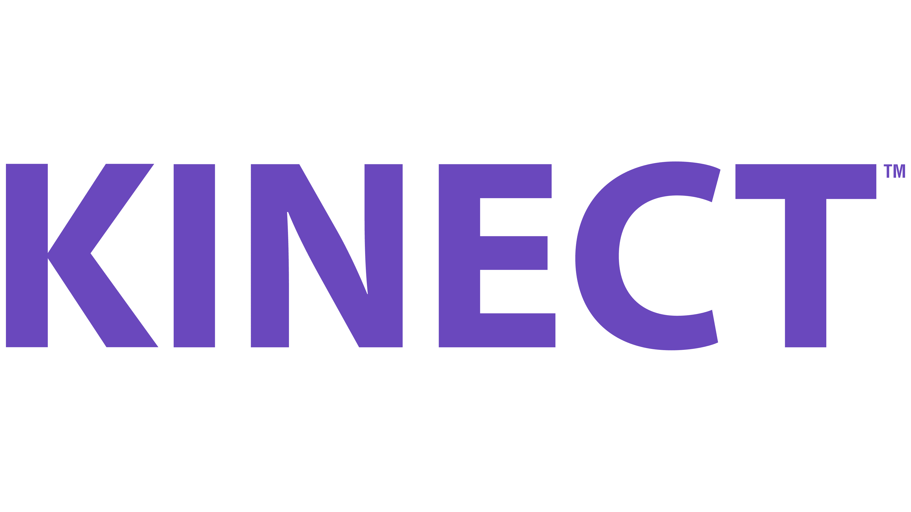

 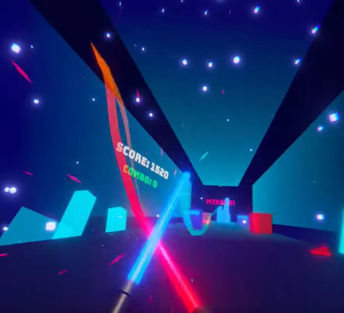
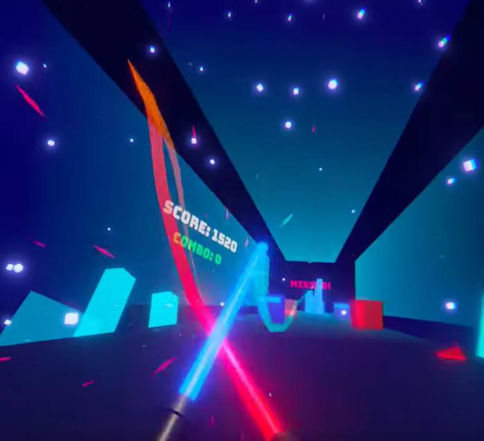


-
VR Bowling Simulator game for improving your bowling skills!
The game features avatar customization, multiple bowling lanes and bowling pin types. The design features multiple locomotion techniques including teleportation, snap turn and free movement. Made with Unity using the Meta Quest 3 Headset.

Coding Virtual Worlds
VR
Solo
2024
Itch.io Youtube


AR Ugandan Musical Instrumentsü•Å
-
An augmented reality application designed to teach about native musical instruments from different regions of Uganda üá∫üá¨. This technical demonstration was a component of an Aalto University MA in New Media student's master's thesis.
 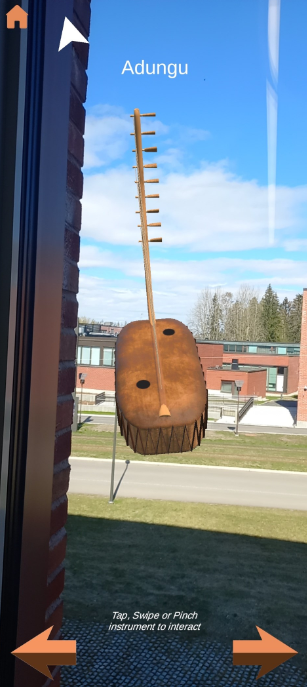
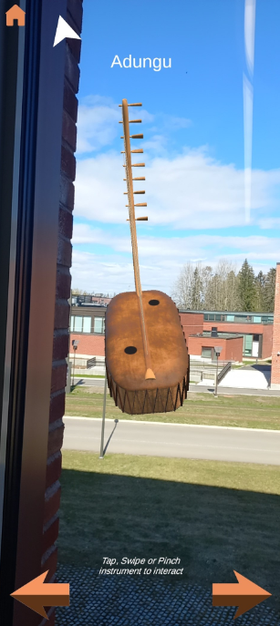

Role: Thesis Collaborator, Programmer, Designer
AR
3 People
2024
Thesis Youtube

-
Entry for the Computer Graphics Hackathon, Graffathon 2024 at Aalto University. Features short narrative tied by audio-visual synchronization.
üéñÔ∏è6th Place in Beginners Category
Used: Geospatial data for loading photorealistic 3D tilesets in Unity
Demo
Solo
2024
Youtube

DMRI Tract Segmentation Visualization
-
In my BSc. thesis, I classified the brain tracts using supervised machine learning algorithms including NN, One Class SVM etc. This is the 3D Brain Visualization Tool that I created with help of 3D data.
Application
Research
BSc. Thesis
4 People
2019
Youtube


-
A website facilitating medical support and information utilizing geolocation and google maps API.
Users can 1. Search for doctors according to their department and location 2. Find nearby medicine shop, hospital and diagnostic center and 3. Place appointment to their doctor of preference.
Tools: ASP.net, MySQL
Web Application
3 People
2017
Github
2023 Projects

-
Play as an intergalactic sous-chef on the lookout for exotic missing ingredients, as they embark on a culinary journey to Earth.
Uniqueness:
1. FPS Cooking Game
2. Game Environment Generated using Geospatial 3D Data
 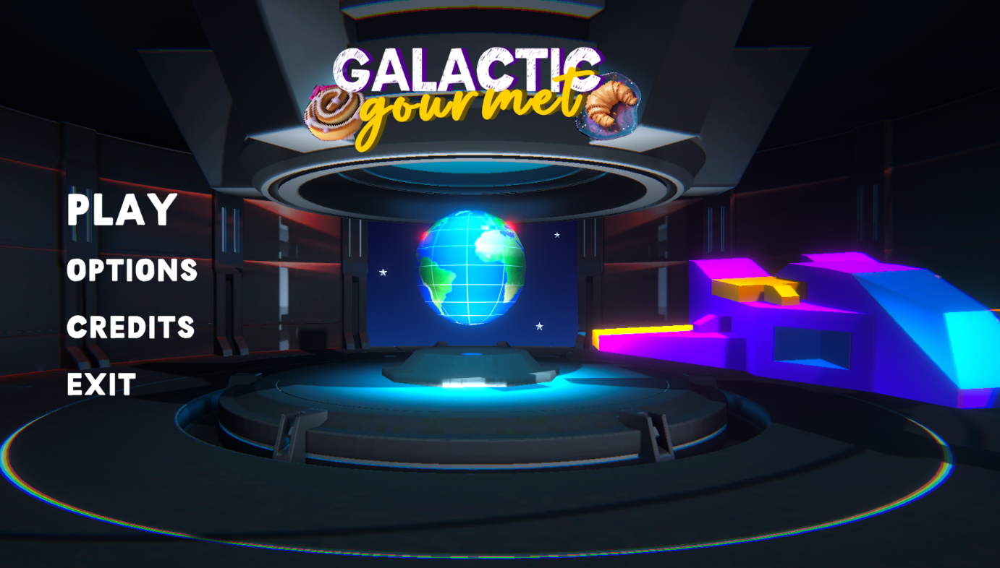
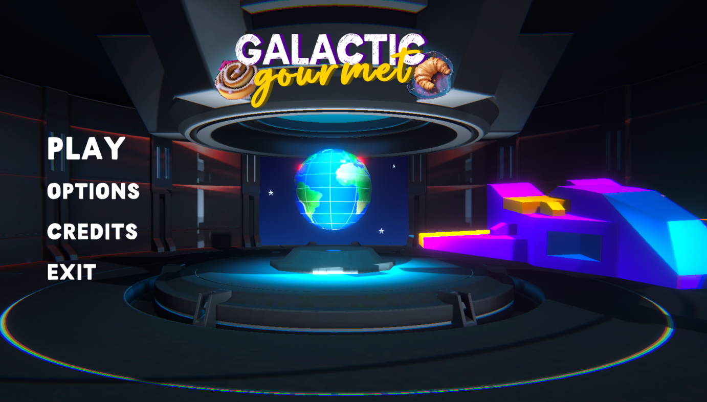
Genre: FPS, Retro
Role: Programmer, Game Designer, Artist
GN! Autumn 2023 Jam
PC
2 People
2023
Itch.io Youtube

-
Dime Shift is a perspective-shifting puzzle platformer. Play as a tiny 2D robot who tries to become sentient.
In the game, you play as an ordinary factory robot whose only objective is to push boxes. One day, it finds out it is capable of more than pushing boxes. During its journey through the robot factory, it learns from the environment, gradually gaining consciousness and trying to find itself.

 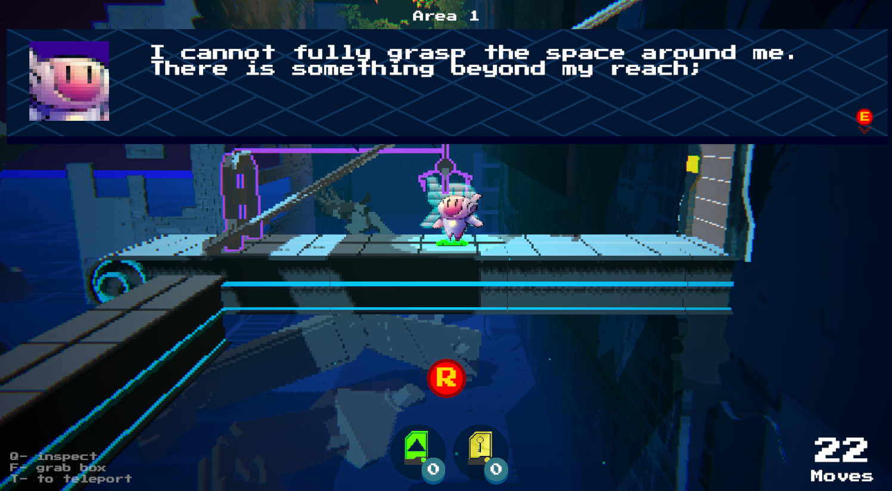
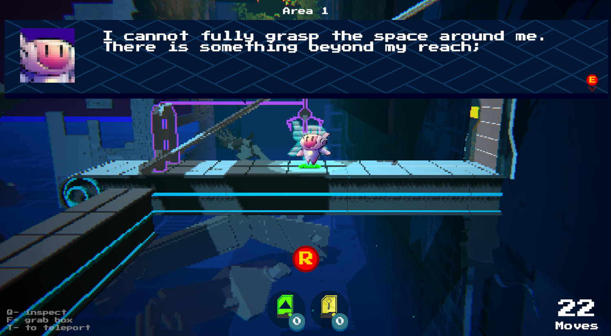
Genre: Puzzle, Platformer
Role: Programmer, Game Designer, Producer, Vision Holder
Game Project 1 at Aalto
PC
6 People
2023
Itch.io Youtube

-
You and a bunch of ducklings are chasing after the coolest duck around, the Queen of Ducks. Find your way through three stages that are packed with obstacles and points to score – but remember to move to the rhythm!


Genre: Rhythm, Runner
Role: Programmer
Aalto Orientation Jam 2023
Web
7 People
Itch.io

-
A cute side-scrolling platformer where a farmer's cat has to find water sources to grow the vegetables.
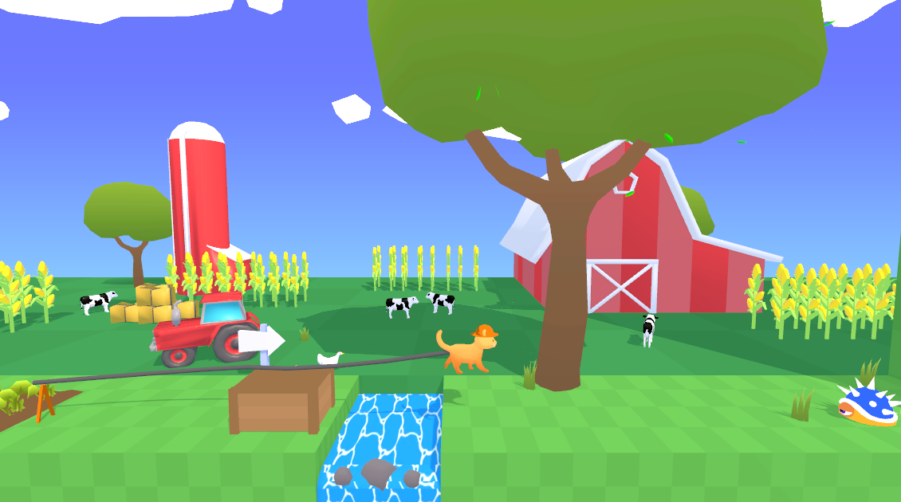


Genre: Platformer
Global Game Jam 2023
PC
Solo
Itch.io
-
Cleaners have decided to protest against mass littering by littering. Hence their roles have reversed! Survive from the cops for as long as you can and reach higher scores by littering all around!


Genre: Racing, Survival
GMTK Game Jam 2023
Web
Solo
2023
Itch.io

AR Outdoor Navigation Assistant
-
Outdoor navigation drone assistant using Cesium Geospatial Visualization tool in Unity as part of a course project. The application detects current device location and generates 3D realistic tiles to aid with visualization, navigation and additional information.
AR
Solo
2023
Youtube

-
A short product packaging design that I loved rendering using Unity!
Done by me: textures, lighting, audio, VFX, post-processing
Cinematic
Solo
2023
Youtube
2022 Projects

-
A topdown 3D game where your primary objective is to clean the sea by collecting different types of trash. Unlock new items, explore new areas and upgrade your ship while at it!

 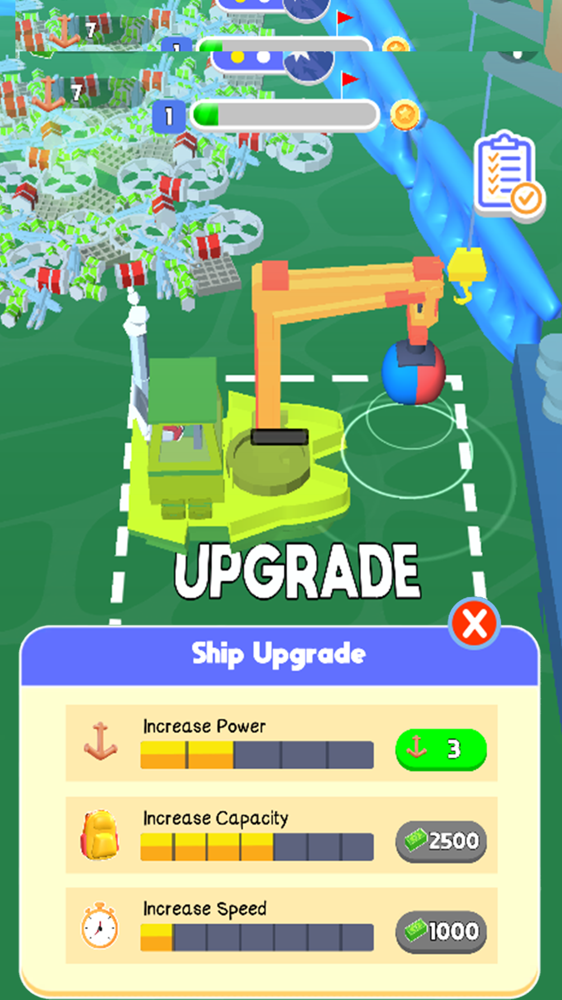
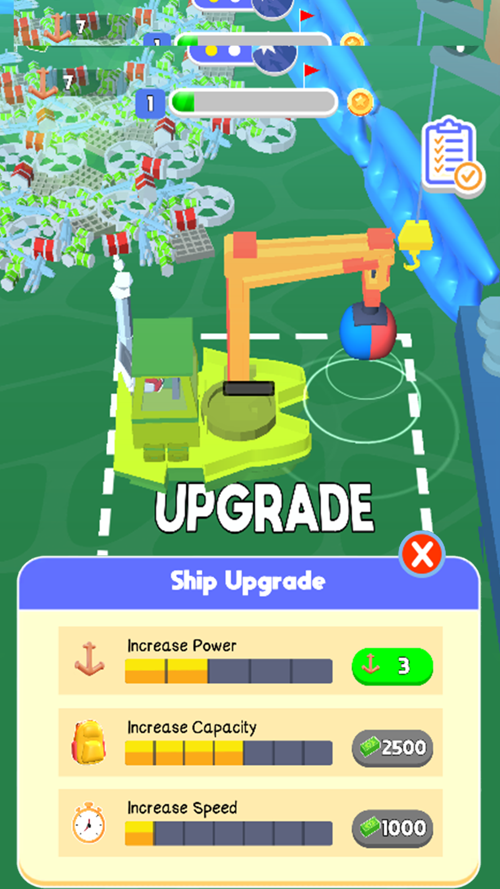
Genre: Idle Arcade
Role: Programmer, Game Designer
Mobile
6 People
2022
GooglePlay
-
A 2D platformer where player has to capture injured sharks and treat them in the lab.


Genre: Platformer
Role: Programmer, Game Designer
Unreleased
Mobile
2 People
2022
Youtube

-
Idle tower defense/clicker game with a diverse upgrade system, stunning visuals and solid gameloop.
 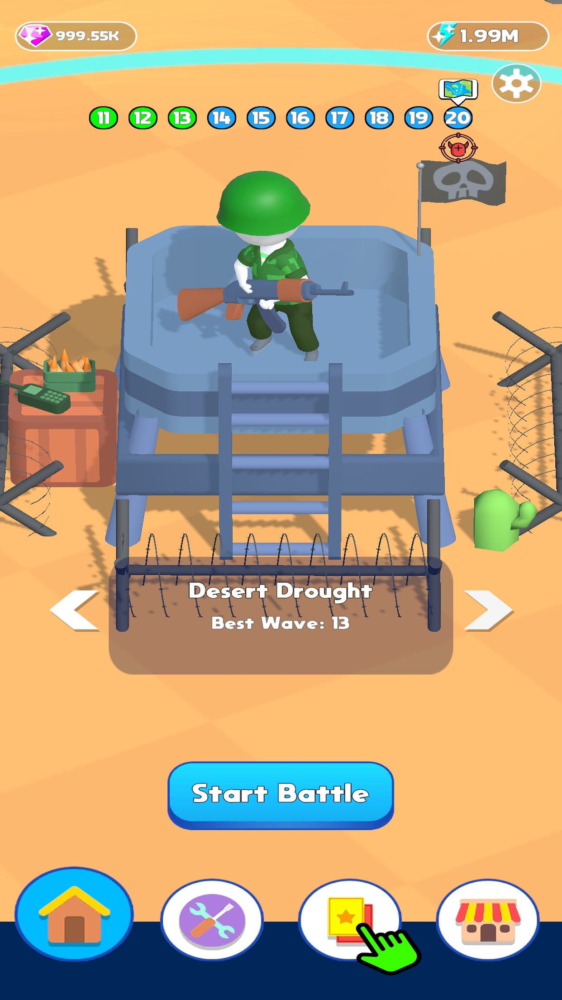
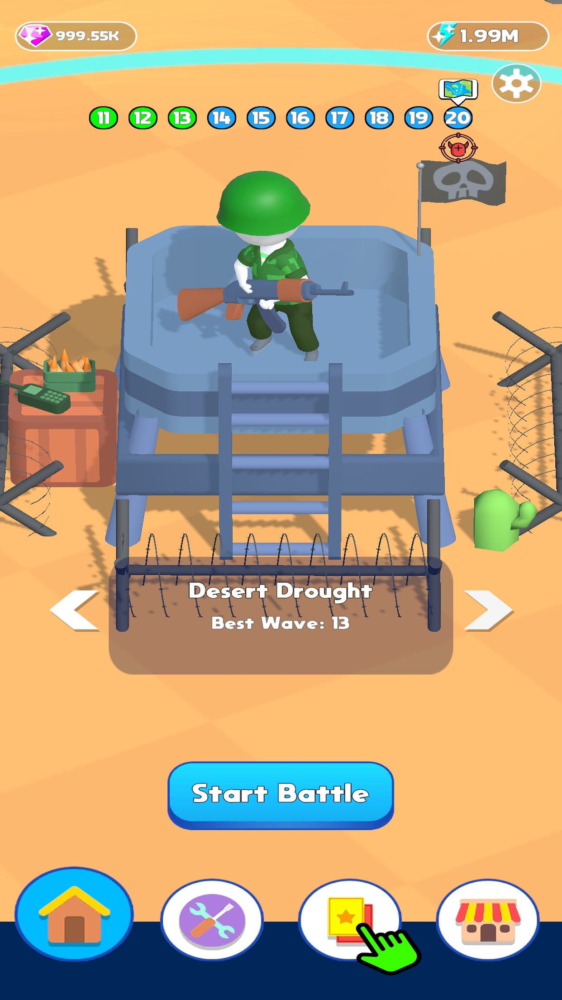

Genre: Idle Defense, Survival
Role: Programmer, Designer
Mobile
6 People
2022
GooglePlay

-
A hypercasual prototype that I created in 4 days for a technical assignment as part of a recruitment process.
Features:
1. Spline-based Level Design,
2. Smooth Player Controls
3. Intelligent Enemy AI

 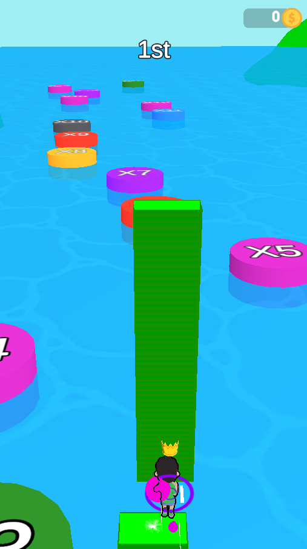
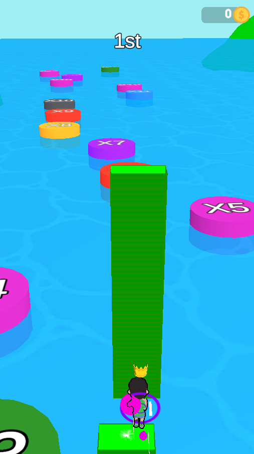
Genre: Runner
Mobile
Solo
2022
GooglePlay Github Youtube

-
Aquatic Park management game that features relaxing fishing, progressive gameplay and seafoods! I was responsible for features such as: game design, player controls, fish movement, catching and storage, level up system, upgrade system and overall look and feel of the game.
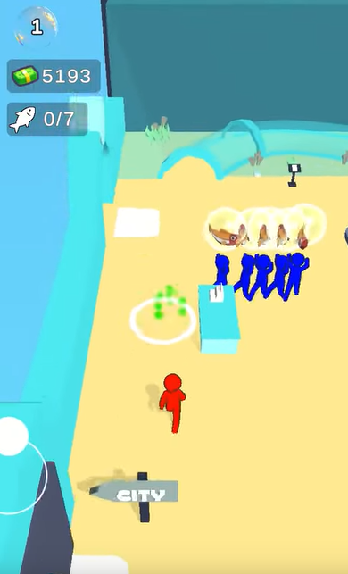
 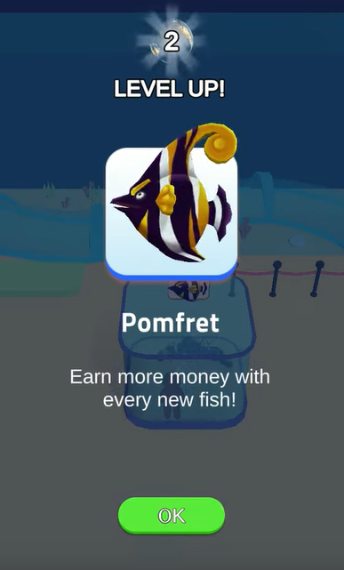
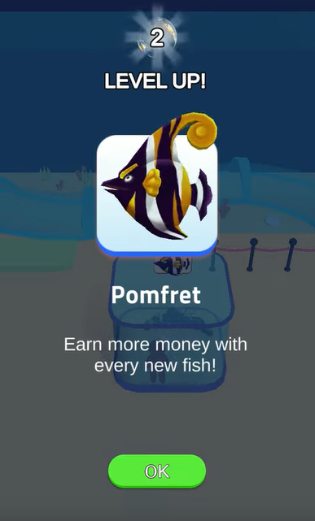
Genre: Hybrid-Casual, Idle Arcade
Mobile
3 People
2022
Youtube

-
A cozy cinematic I created alongside my spouse celebrating the festivities and wishing a happy Eid to everyone!
Rendering Pipeline: Unity HDRP
Cinematic
2 People
2022
Youtube
2021 Projects

-
Guarding a graveyard, you have to use your flashlight to keep ghosts at bay and survive the night!üëª
The game features multiple challenging levels, goal-based progression system, boss fights and character upgrades!
Besides programming the gameplay, UI and backends, I have also worked on Ad integration and monetization.
 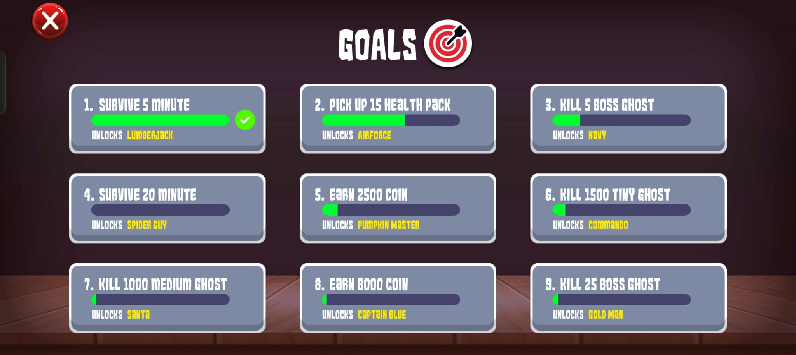
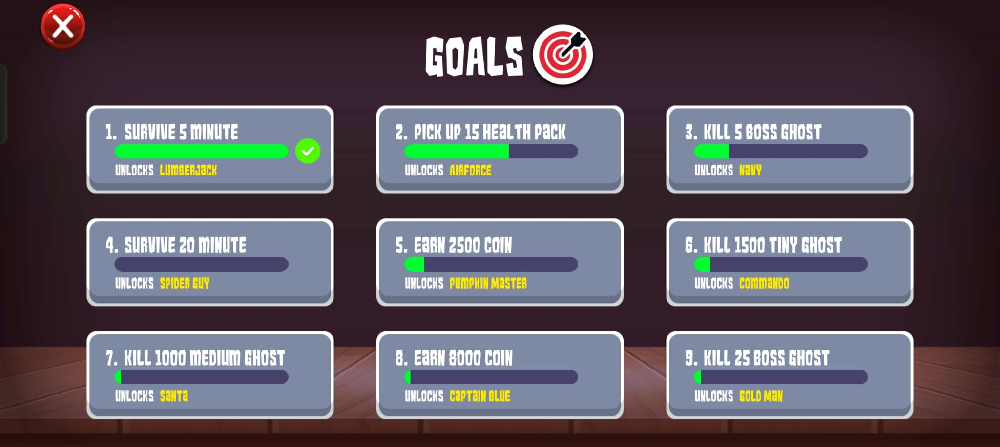


Genre: Topdown, Survival
Role: Programmer, Level Designer
Mobile
2 People
2021
Itch.io Youtube
-
A relaxing fishing game that features multiple customizations, upgrades, novel level selection system and many more unique features.
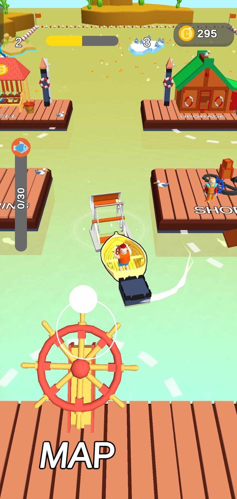


Genre: Idle Arcade, Fishing
Mobile
6 People
2021
GooglePlay Youtube

-
Infinite runner where the primary objective is to catch the runaway cow while avoiding chaos in the streets! Another minigame turns the table and lets the player be in the cow's shoes!
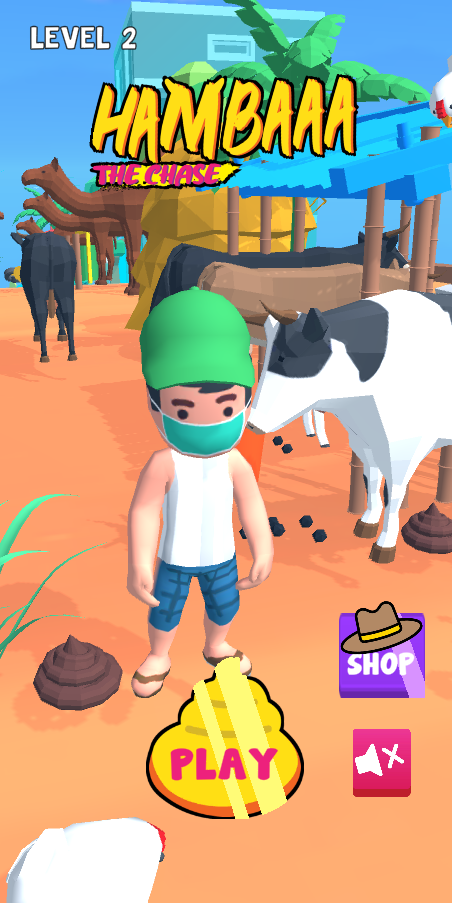
 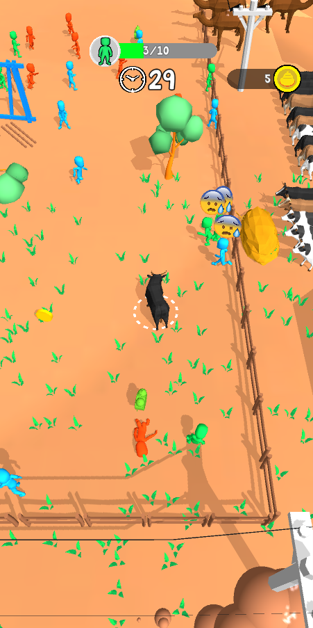
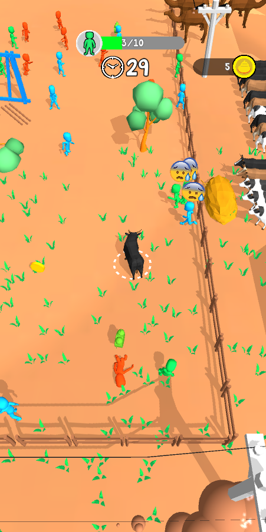
Genre: Runner
Mobile
Solo
2021
GooglePlay Youtube
2020 Projects

-
Keep switching colors to match your enemies and survive as long as you can!
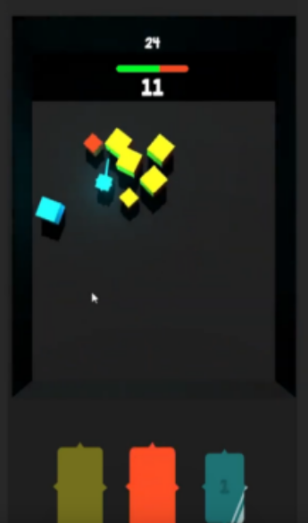
Genre: Casual, Survival
Mix and Game Jam 2020
Mobile
Web
Solo
2020
Itch.io

-
A short made during the COVID-19 pandemic showcasing a relaxed morning in a uncrowded city under lockdown.
Cinematic
Solo
2020
Youtube

-
A COVID-19 app that uses API to fetch real-time global data and gives regular region specific updates.
Role: Design, API integration, UI/UX
Mobile Application
2 People
2020
Youtube